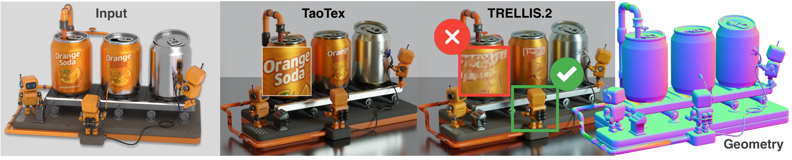
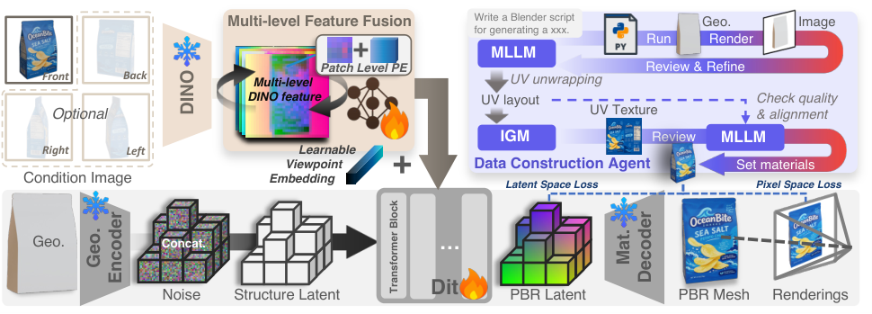
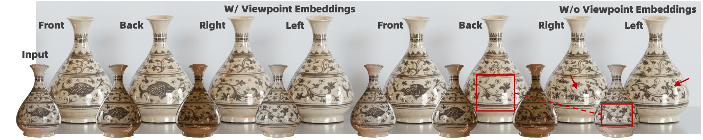
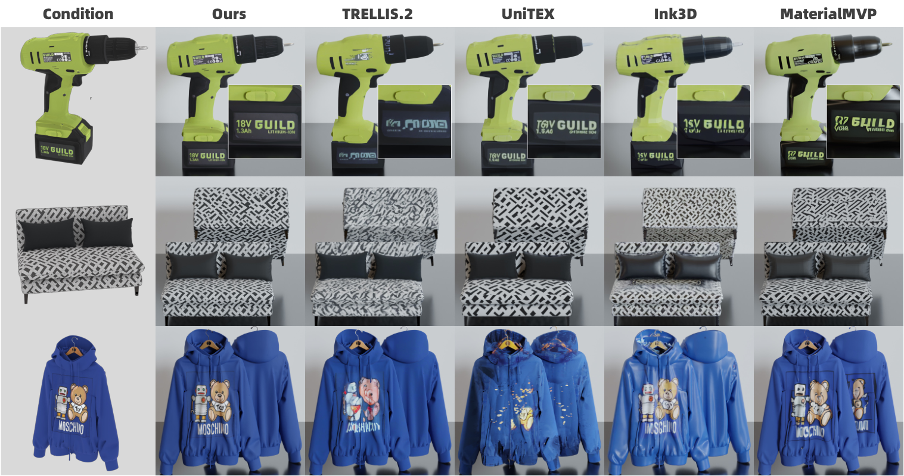
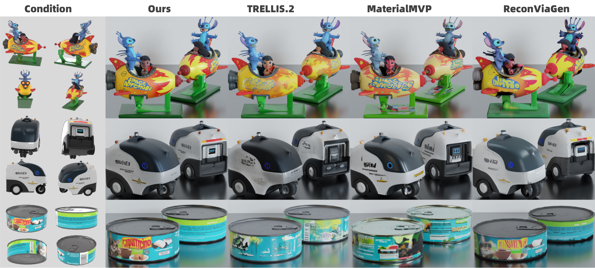
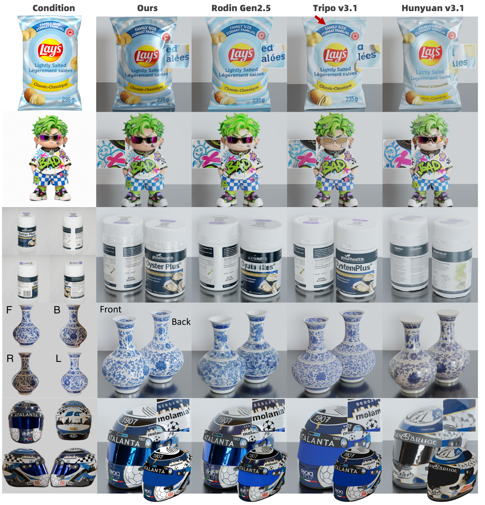
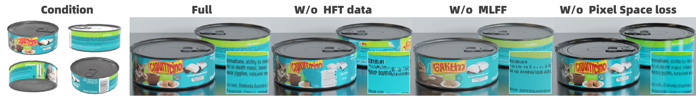

alibaba/Taobao3D 仓库(2026-10-28 拉取)只有 Dens3R / HRM2Avatar / TaoFlowForge 三个目录,无 TaoTex。因此「⚙️ 工程实现细节」章节可信度低于有源码笔记,数值均为论文自述、无法验证。一句话概括:TaoTex 是淘天 Taobao3D 团队的原生 3D 材质生成模型:在 TRELLIS.2 的 o-voxel 表征与材质 SC-VAE 之上做扩散生成,输入"几何 + 一到四张图像",直接输出 albedo / roughness / metallic 三通道 PBR 材质。它要解决的痛点非常具体——几何平坦但纹理高频的表面(饮料罐上的文字、包装盒上的 logo、印刷图案),此前所有原生 3D 方案在这里都会糊掉。
先用 2D 生成模型出多视图纹理,再反投影回网格表面。三项结构性缺陷(论文 §1):"texture baking may produce ghosting in overlapping regions, self-occluded areas require additional UV-space inpainting, and texture-geometry misalignment can cause projection artifacts"——重叠区鬼影、自遮挡区要额外 inpaint、几何-纹理错位导致投影伪影。§2.1 再补一刀:高频区域跨视图不一致、深度边界处伪影。
直接在 3D 表征上生成,机理上免疫投影问题。但现有方案在"几何平坦但纹理高频"区域失效(§1):"These regions lack distinctive geometric cues for the model to match with the conditional images, leading to incorrect or fragmented textures"——平坦表面没有几何线索帮模型把图像纹理"对号入座",文字糊成碎片(论文图 2 红框)。

| 失败因素(原文归因) | 对应解法 |
|---|---|
| ① 公开 3D 数据集中高频纹理不足,"复杂图案→简单表面"的映射从未被模型见过 | HFT 数据 agent(§4) |
| ② 条件图像特征语义偏置、缺细节信息 | MLFF 多层特征融合(§5) |
| ③ latent 空间训练受限于 3D VAE 的重建精度上界 | latent→pixel 损失切换(§6) |
| (附加)多视图支持缺失或效果差 | viewpoint embeddings + low-SNR 采样(§7) |
输入:几何 $\mathcal{G}$(o-voxel 表征)+ 一到四张条件图像 $C$(渲染分辨率 1024×1024);输出:PBR 材质(albedo / roughness / metallic 三通道),直接附着在输入几何上。backbone:TRELLIS.2 系(Xiang et al., 2026)——o-voxel 表征 + 材质 SC-VAE(在自家数据上微调)+ DiT 去噪网络 $\mathcal{F}_\theta$;条件是 DINOv2 特征(经 MLFF 融合)+ 几何 latent $\mathbf{z}_{\mathcal{G}}$。

| 符号 | 含义 | 维度 / 出处 |
|---|---|---|
| $\mathcal{F}_{\theta}$ | DiT 去噪网络(材质生成主干) | 维度原文未给(式 1) |
| $\mathcal{M}_{\phi}$ | MLFF 特征聚合模块 | 与 $\mathcal{F}_\theta$ 联合训练(式 2) |
| $\mathbf{x}_t$ | step $t$ 的 material SC-VAE latent | 维度原文未给 |
| $\mathbf{z}_{\mathcal{G}}$ | 几何 latent,TRELLIS.2 预训练 encoder 产出 | 式 1 |
| $\mathbf{z}_c=\mathcal{E}(C)$ | 条件图像的 DINOv2 深层语义特征(基线方案) | §3.2 |
| $\{\mathcal{E}^{(l)}(C)\}_{l=1}^{L}$ | DINOv2 多层特征,$L=4$:第 4、11、17、23 层 | §3.2 "empirically suffices" |
| $\mathbf{v},\hat{\mathbf{v}}$ | v-parameterization 目标速度 / 网络预测值 | 式 1;Salimans & Ho, 2022 |
| $K$ | pixel-space 损失监督的视角数(条件视角 + 2 个 novel 视角) | 式 3,$K$ 具体值原文未给 |
| $\lambda_1,\lambda_2,\lambda_3$ | L1 / SSIM / LPIPS 权重 | 条件视角 $(1.0,0.2,0.2)$;novel 视角 $(0.2,0.2,1.0)$(§3.2) |
论文的核心判断:"复杂图案 → 简单表面"这个映射在公开数据集里几乎不存在,模型自然学不会。那就自己造——而且不用人工,用一个两级 agent 流水线批量合成 HFT(High-Frequency Textured)资产:几何故意选简单拓扑(罐、杯、盒),把所有难度压在纹理上。
| 来源 | 规模 | 说明 |
|---|---|---|
| Objaverse-XL (Deitke et al., 2023) | 500K | 高质量过滤后的 PBR 资产 |
| TexVerse (Zhang et al., 2025) | 300K | 同上 |
| 自建 HFT | 50K | 数据 agent 合成,含大量对称几何(圆柱、盒)——为 §7 的视角嵌入训练服务 |
每个资产在 16 个视角、1024×1024 分辨率下渲染,随机视场角与环境光照(§3.4)。
基线做法是用 DINOv2 的单一深层语义特征 $\mathbf{z}_c=\mathcal{E}(C)$ 做条件——语义强但细节被"抽象掉"了("fail to retain details",§3.2,论文图 4 有对照)。文字、logo 这类高频信息恰恰活在中浅层特征里。MLFF 的做法:同时取 $L=4$ 层(第 4、11、17、23 层)的特征,融合后替代 $\mathbf{z}_c$。
基线(v-预测,用单一语义特征):
引入 MLFF 后(条件换成融合特征,MLFF 与 DiT 联合优化):
融合后的特征替代 $\mathbf{z}_c$ 作为条件 token 进入 DiT(cross-attention 位)。
latent 空间训练的天花板是 3D VAE 的重建精度——latent 里丢掉的细节,监督信号再强也回不来("latent-space training inevitably incurs fidelity loss from compression artifacts")。解法是一条 coarse-to-fine 的监督切换:前期纯 latent 损失打底,后期把预测解码回像素空间做光度监督。
预测 $\hat{\mathbf{v}}$ 映回 $\mathbf{x}_0$、经(冻结的)微调材质 SC-VAE 解码成 PBR mesh,再渲染成像素空间的 albedo / roughness / metallic 图,在 $K$ 个视角上算:
两类视角权重不对称(§3.2):
| 视角类型 | $(\lambda_1,\lambda_2,\lambda_3)$ | 意图 |
|---|---|---|
| 条件视角(与输入图同视角) | $(1.0, 0.2, 0.2)$ | 偏重逐像素保真(L1 主导)——重建任务 |
| 2 个 novel 视角 | $(0.2, 0.2, 1.0)$ | LPIPS 主导,重感知真实感而非像素对齐——生成任务 |
切换时机(§3.4 Optimization):训练共两个 100K 步阶段——第一阶段纯 latent 损失,第二阶段加入 pixel-space 损失;全程单视图/多视图输入交替训练。
去掉 pixel-space loss:多视图设置下 Albedo PSNR 25.48→24.61(−0.87dB)、Rendering PSNR 27.30→26.22(−1.08dB);"tiny text exhibits noticeable distortion"(§4.2,小字明显变形)。
朴素的多视图做法是把所有视图的视觉 token 直接拼接喂给 $\mathcal{F}_\theta$——token 序列变长后,图像-几何对齐难度剧增,结果是纹理碎裂、张冠李戴("left-view textures are erroneously mapped to the back",图 5 红框)。TaoTex 的解法很轻:给每个视图的特征加一个可学习 viewpoint embedding。

去掉 viewpoint embeddings:Albedo PSNR 25.48→24.47(−1.01dB)、Rendering PSNR 27.30→26.47(−0.83dB)。
| 损失 | 公式 | 权重 / 超参(原文值) | 阶段 | 作用 |
|---|---|---|---|---|
| $\mathcal{L}_{\theta}$ | 式 1,latent v-预测 MSE(单一语义特征条件) | — | 基线形式 | 基线训练目标 |
| $\mathcal{L}_{\theta,\phi}$ | 式 2,latent v-预测 MSE(MLFF 融合特征条件) | — | 阶段一(前 100K 步)唯一损失;阶段二保留 | 材质 latent 的扩散训练主项 |
| $\mathcal{L}_{\theta,\phi}^{*}$ | 式 3,pixel-space L1+SSIM+LPIPS 多视角光度监督 | 条件视角 $(1.0,0.2,0.2)$;2 个 novel 视角 $(0.2,0.2,1.0)$;$K$=条件视角数+2 | 阶段二(后 100K 步)加入 | 突破 VAE 重建精度上界,锐化小文字 |
⚠️ 原文未给式 2 与式 3 在阶段二的组合系数(仅描述两阶段顺序切换);VAE 微调阶段与 DiT 阶段的超参细节见 §10。代码未开源,以上均无法独立验证。
推理步数、采样器类型、是否用 CFG 等细节原文均未给出,代码未开源无法补充。
alibaba/Taobao3D 仓库无 TaoTex 目录)。以下所有数值均摘自论文 §3.4,无法独立验证;论文未给的项目不猜测。| 项 | 论文值 | 出处 |
|---|---|---|
| VAE 微调 | material SC-VAE(TRELLIS.2 系)在自建数据上微调;16 × NVIDIA H20,total batch 64 | §3.4 |
| DiT 训练 | 冻结 VAE 后训 DiT + 其余模块,batch 16,AdamW,lr = $1\times10^{-4}$ | §3.4 |
| 训练阶段 | 两个 100K 步阶段:先纯 latent 损失,再加入 pixel-space 损失;全程单/多视图交替 | §3.4 Optimization |
| 时间步采样 | logit-normal,mean=2,std=1(偏 low-SNR) | §3.3 |
| 渲染 | 每资产 16 视角、1024×1024、随机 FOV 与环境光 | §3.4 Dataset |
| MLFF 层选择 | DINOv2 第 4 / 11 / 17 / 23 层 | §3.2 |
| 最大输入视图数 | 4(front/back/left/right 规范化方位) | §3.3 |
| 方法 | Alb. PSNR↑ | Alb. SSIM↑ | Alb. LPIPS↓ | Rend. PSNR↑ | Rend. SSIM↑ | Rend. LPIPS↓ | NV-Alb. FID↓ | NV-Alb. CLIP-FID↓ | NV-Alb. CLIP-I↑ | NV-Rend. FID↓ | NV-Rend. CLIP-FID↓ | NV-Rend. CLIP-I↑ |
|---|---|---|---|---|---|---|---|---|---|---|---|---|
| MaterialMVP | 18.90 | 0.830 | 0.160 | 20.84 | 0.866 | 0.150 | 124.10 | 17.12 | 0.8777 | 102.88 | 13.19 | 0.9037 |
| UniTEX | 21.84 | 0.873 | 0.101 | 22.81 | 0.896 | 0.097 | 111.82 | 16.33 | 0.8896 | 104.33 | 13.88 | 0.9074 |
| Ink3D | 19.39 | 0.837 | 0.155 | 21.24 | 0.873 | 0.134 | 143.89 | 21.08 | 0.8633 | 112.94 | 14.88 | 0.9023 |
| TRELLIS.2 | 21.92 | 0.879 | 0.096 | 23.46 | 0.907 | 0.090 | 113.86 | 15.21 | 0.9063 | 87.69 | 13.21 | 0.9150 |
| TaoTex (Ours) | 25.15 | 0.914 | 0.049 | 26.52 | 0.938 | 0.044 | 96.90 | 14.53 | 0.9096 | 77.66 | 12.11 | 0.9219 |
原文 caption 注明"Bold: best, underlined: second best";纯文本丢失了加粗/下划线信息,表中仅按数值最优标出 Ours 行。second best 请以 PDF 为准。
| 指标 | Δ |
|---|---|
| Albedo PSNR | 21.92 → 25.15, +3.23 dB |
| Albedo LPIPS | 0.096 → 0.049, 降 49.0% |
| Rendering PSNR | 23.46 → 26.52, +3.06 dB |
| NV-Rendering FID | 87.69 → 77.66, 降 11.4% |
| 方法 | Alb. PSNR↑ | Alb. SSIM↑ | Alb. LPIPS↓ | Rend. PSNR↑ | Rend. SSIM↑ | Rend. LPIPS↓ |
|---|---|---|---|---|---|---|
| MaterialMVP | 20.18 | 0.873 | 0.117 | 22.40 | 0.900 | 0.103 |
| TRELLIS.2 | 19.91 | 0.852 | 0.162 | 21.76 | 0.883 | 0.153 |
| TaoTex (Ours) | 25.48 | 0.919 | 0.051 | 27.30 | 0.941 | 0.045 |
值得注意:TRELLIS.2 在"作者实现的多视图模式"下成绩反而低于其单视图(19.91 < 21.92)——佐证了 §7 的"多视图 token 拼接反而引入歧义"判断;TaoTex 多视图略高于单视图(25.48 > 25.15),方向相反。



| 变体 | Alb. PSNR↑ | Alb. SSIM↑ | Alb. LPIPS↓ | Rend. PSNR↑ | Rend. SSIM↑ | Rend. LPIPS↓ |
|---|---|---|---|---|---|---|
| W/o HFT data | 22.90 | 0.896 | 0.087 | 24.86 | 0.923 | 0.077 |
| W/o MLFF | 23.40 | 0.905 | 0.072 | 25.34 | 0.928 | 0.065 |
| W/o viewpoint embeddings | 24.47 | 0.911 | 0.062 | 26.47 | 0.935 | 0.054 |
| W/o pixel-space loss | 24.61 | 0.913 | 0.064 | 26.22 | 0.935 | 0.057 |
| Ours | 25.48 | 0.919 | 0.051 | 27.30 | 0.941 | 0.045 |
| 组件 | Alb. PSNR Δ | Rend. PSNR Δ | Alb. LPIPS 恶化 | 伤害排序 |
|---|---|---|---|---|
| HFT 数据 | −2.58 dB | −2.44 dB | +0.036 | 🥇 最大 |
| MLFF | −2.08 dB | −1.96 dB | +0.021 | 🥈 |
| viewpoint embeddings | −1.01 dB | −0.83 dB | +0.011 | 🥉 |
| pixel-space loss | −0.87 dB | −1.08 dB | +0.013 | 第四 |
读表结论:四个组件贡献全部为正且量级清晰——数据(HFT)比架构(MLFF)更重要,架构又比训练策略(pixel loss)更重要,符合"数据缺口是首要失败因素"的叙事。定性对照:无 HFT 时"模型无法合成可辨认文字"(图 4);无 MLFF 时纹理碎裂、块状、扭曲;无 pixel loss 时整体可辨但小字明显变形。

| 方法 | 年份 | 输入假设 | 表示 | 监督信号 | 训练数据 | 训练时长 | 推理耗时 | 显存 | 关键指标 | 开源 |
|---|---|---|---|---|---|---|---|---|---|---|
| TaoTex | 2026 | GT 几何 + 1~4 图 | o-voxel + SC-VAE latent(native) | v-预测 + pixel-space L1/SSIM/LPIPS | 850K(500K+300K+50K HFT) | 200K 步(16×H20) | — | — | 单视图 Alb. PSNR 25.15 | ❌(仅论文) |
| TRELLIS.2 | 2026 | 单图(几何+材质联合) | o-voxel / SLAT | flow matching | 大规模多源 | — | — | — | 21.92(单视图 Alb. PSNR) | ✅ |
| UniTEX | 2026 | 几何 + 单图 | view-space(微调 FLUX 多视图) | 扩散 | — | — | — | — | 21.84 | — |
| Ink3D | 2026 | 几何 + 单图 | view-space(视频扩散轨道扫描) | 扩散 | — | — | — | — | 19.39 | — |
| MaterialMVP | 2025 | 几何 + 图像 | view-space PBR 扩展 | 扩散 | — | — | — | — | 18.90 | — |
| ReconViaGen | 2026 | 多视图图像(无几何输入) | VGGT 特征重建 | 重建式 | — | — | — | — | 仅定性对比 | — |
| NaTex | 2026 | 固定形状 + 条件 | 双流 autoencoder,几何/颜色解耦 | — | — | — | — | — | —(未进 TFF/TaoTex 评测) | — |
⚠️ "—" = 论文未报告且本笔记不猜测。商业模型(Tripo、Meshy、Rodin、Hunyuan3D v 系)在正文未具名,仅图 8 对比,无法列表。
| 范式 | 代表方法 | 核心先验 | 局限 |
|---|---|---|---|
| SDS 逐物体优化 | DreamFusion 系 | 2D 扩散先验 | 慢、过饱和、Janus 多头 |
| 逐视图投影 | TEXTure、Text2Tex | 2D 生成质量高 | 跨视图不一致累积 |
| 多视图扩散投影 | MVD 系、UniTEX、Ink3D、MaterialMVP | 同步去噪改善一致性 | 投影伪影/遮挡/对齐的结构性问题仍在 |
| 原生 3D(联合几何+纹理) | SLAT/TRELLIS 系、Hunyuan3D | 统一 latent 联合参数化 | 几何-纹理耦合,纹理受几何质量牵连 |
| 原生 3D(纹理专用,GT 几何) | TaoTex、NaTex | 几何已知,全力做材质保真 | 依赖外部几何来源;体素分辨率天花板 |
与 TaoFlowForge 配套:TFF 负责几何(轻量、拓扑干净、可 UV 展开的网格),TaoTex 负责材质(albedo/roughness/metallic)。官方解读(公众号,2026-09-30)给出的生产约束是资产 <5MB、秒级加载、40fps 端侧渲染。公众号对比图(非论文内容)中还出现了与 Tripo、Meshy、Rodin、Hunyuan3D 商用版本的定性对比。
| 项 | 评估 |
|---|---|
| 可用性 | ❌ 当前不可用——代码与权重均未发布,只能等官方放出;无任何第三方复现 |
| 输入依赖 | 需要 GT 质量的几何(o-voxel 兼容);我们 3DGS 系输出需要先网格化(如 GOF/2DGS 提取)才能用 |
| 与数字人主线的关系 | 间接价值:① 给重建好的人体/道具网格做材质重生成;② HFT 数据 agent 的思路(MLLM 造几何 + IGM 造纹理 + MLLM 质检)可直接借用到其他数据稀缺任务;③ MLFF"多层特征融合"对任何用 DINO 系特征做条件的任务都有参考价值 |
| 替代方案 | 开源侧目前以 TRELLIS.2 自带材质 / Hunyuan3D 系为可用基线;TaoTex 的 +3.2dB Albedo PSNR 差距是否值得等待,取决于对"文字级纹理"的需求强度 |
问题:无代码、无权重、无 HFT 数据、无评测用的 30 物体清单——四个组件的全部消融数字都只能信纸面。同团队的 TaoFlowForge 已开源推理代码与权重,说明团队具备开放意愿;TaoTex 更应至少开放评测集与推理权重。佐证:项目页仅 arXiv 与团队主页两链接(2026-10-28 解 href 核实)。建议:发布 30 评测物体清单与渲染协议;开源推理权重。
问题:§4.2 两处引用 "Tabs. 3 and 4"、"Tabs. 3 and 5",但 v1 全文只有 Tab.1/2/3(本笔记已逐字核实,见 §12.2)。消融的定量证据链因此不完整。建议:v2 补齐附录表,或修正引用。
问题:全部定量结论建立在 30 个 TexVerse 物体上,且 TexVerse 同时是训练数据来源之一(300K 训练资产来自 TexVerse)——虽然评测物体应是留出集,但分布同源会系统性偏袒;无 user study 支撑"文字可读性"这类感知宣称;与商业模型的对比几何输入不一致(自己用 Rodin 几何,别人用各自几何)。建议:补充跨数据集(如 Google Scanned Objects)评测与用户研究;商业对比统一几何输入。
问题:viewpoint embeddings 绑定 front/back/left/right 四个规范化方位(90° 水平 × 180° 垂直)。顶视图/底视图、任意角度输入的支持方式未讨论;电商实拍图恰恰常有俯拍角。建议:把离散 embedding 升级为连续视角条件(如相机位姿编码)。
问题:作者自承"受限于体素分辨率,微小文字重建仍有瓶颈",更高分辨率带来显存爆炸(§5)。建议:参考稀疏/分层表征,或 latent 上采样后接轻量细化头。
| 优先级 | 改进点 | 一句话 |
|---|---|---|
| 高 | ① 零开放资产 | 当前完全不可验证 |
| 高 | ② Table 4/5 缺失 | 消融证据链不完整 |
| 中 | ③ 评测面窄 | 30 物体 + 训练/评测同源 |
| 中 | ④ 四方位视角约束 | 任意视角未支持 |
| 低 | ⑤ 分辨率天花板 | 作者自承的小字瓶颈 |
总结:TaoTex 是一篇"工程组合拳"风格的工业技术报告:不发明新范式,而是把数据(agent 造 HFT)、条件(MLFF 多层融合)、监督(latent→pixel 切换)、输入(视角嵌入)四个层面各补一刀,消融显示四刀全部有效(合计贡献约 6.5dB Albedo PSNR 的组件增益)。数字漂亮,但全部建立在未开放、窄评测的纸面上。
演进定位:它标志着原生 3D 材质生成从"联合几何纹理一起生成"分化出纹理专用分支(几何已知、全力做材质),与 TaoFlowForge(几何专用)配套构成 Taobao3D 的"几何/材质分离"资产管线——这条"分离再组合"的路线与 Hunyuan3D 系"一体化生成"形成工业界两条对照路线。方法论上最值得借鉴的是 HFT 数据 agent:当公开数据缺某类映射时,用 MLLM+生成模型合成针对性数据,再用 MLLM 质检闭环,这套范式与具体任务无关。